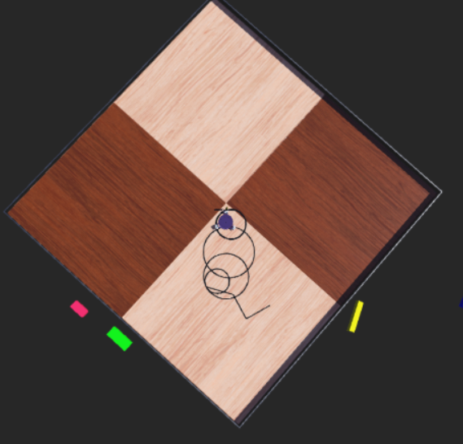
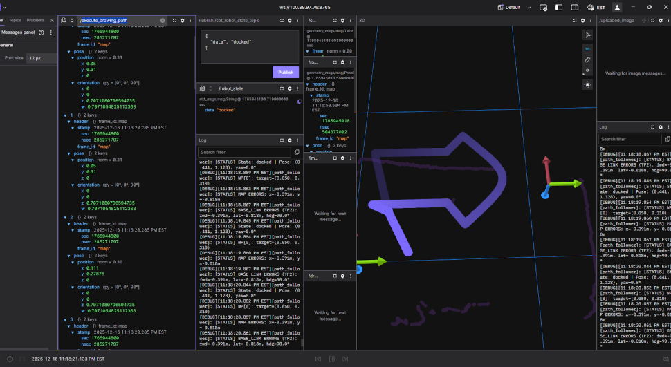
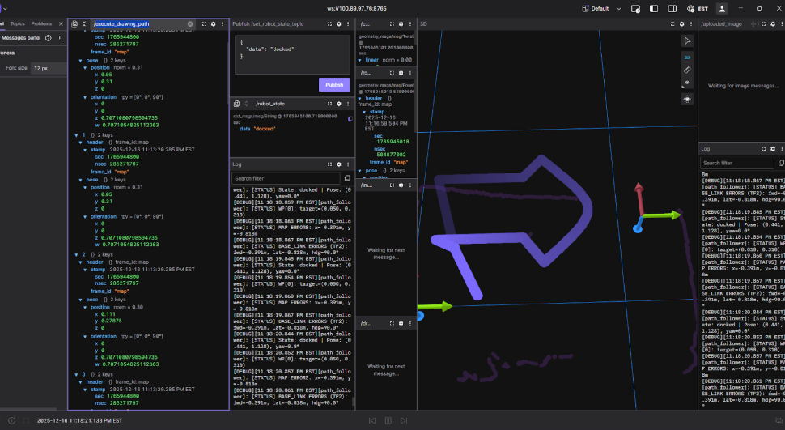
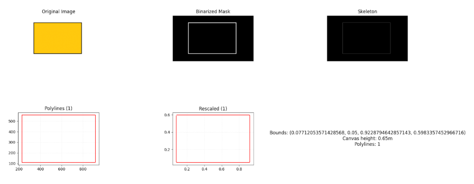
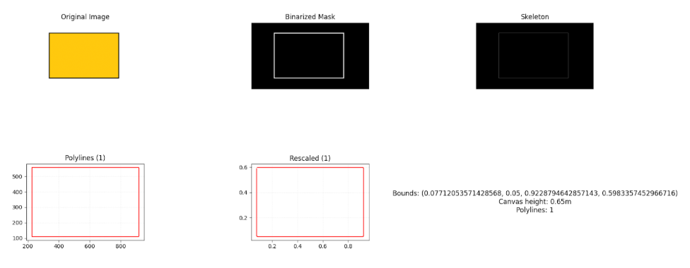

Software Architecture
System Overview
→
Python Backend
RaspPi Server
→
→
Hardware
Motors & Sensors
The software architecture of Scribblz
evolved over the course of the project, as many design changes and decisions called
for overhauls or pivots. However, our consistent goal throughout the project was to
develop a pipeline for users to input an image and have the robot draw said image.
Original Design Goal
Originally, the project vision had the user input exist through a website where someone may have the
choice to select an image from their device and upload it, or draw via simple means, as one would see
in the barebones Microsoft Paint application. For the robot to draw the image, this involved developing
a custom path-following algorithm that would need to interpret the image as some physical entity and perform
various calculations to optimize the traversal of the robot on the window.
Initial Development and Path Finding
To work towards our original goal, we needed to establish a connection between the user and the robot to allow for
the uploaded image to be transformed into a robot drawing it. For the robot drawing, we needed to develop some
software that would optimize for minimal erasure, as we determined that drawing over our lines would smudge
and ruin the drawing, and minimal time, as the robot was currently battery-operated and needed to perform
each drawing quickly so as to not run out of battery while drawing. As such, we developed this architecture
design:

At this stage in time, we had also developed part of the path finding element. This simple script consisted of
two elements: transforming an input image into a series of controllable paths, and executing robot movement along
these paths. For this, we had a visualization that was semi-physically accurate, shown below:

Challenges Encountered
Here, the user inputs an image of a square, showcasing the path to follow and eventually draw over.
This implementation used Python libraries like Shapely to define polylines and OpenCV to extract
contours from images. However, the physics were inaccurate as the robot's shape would simply teleport
between each waypoint, with thousands of waypoints depicting each line.
After showing this demonstration in our design review, we received feedback that made us modify our
choices. The original cloud computing design intended to calculate the path was too much overhead for our
project. Additionally, the lack of intelligence on the docking station, which at first seemed like a good idea,
meant that our localization efforts would be difficult. With this new information, we would plan to modify our
architecture layout.
Simulation Development
Meanwhile, we developed the physical aspects of the simulator. For our purposes, we utilized WeBots
as a simulator to develop and visualize features of our code, such as the inverse kinematics
functionality and the wheel movement. With some hardcoded physical features, such as the length of
the robot, maximum wheel velocities, and marker placement, we were able to visualize and confirm the
movement of the vehicle from inputs.

Experimenting with some software decisions and advice from the PIE faculty, we realized we could classify the polylines before doing certain path following algorithmic decisions to gain more information. This meant we could determine the containment of lines and more consistently explain the inward-out behavior that we intuitively attempted to describe.
With this, we were also able to drive the robot.
Learnings and Pivot
However, this was all done via dead reckoning. We simply assumed the robot’s position would be accurate to where
it was. Given that on the surface we would eventually drive on, wheel slippage was estimated to be a large issue,
we determined new ways to do our localization, which required a technological overhaul and introduced the addition
of the Raspberry Pi 4 to our docking station. As we added another computer, which requires additional communication,
we did a slight pivot to a ROS architecture, as we determined it would be in line with our learning goals and give us
experience with something that we expected to be important in the future.
Localization
Now that we had a processor on the docking station, we had to ideate on the ideal method
for localization. We initially tried this by using a camera on the docking station and IR LEDs
on the robot. The camera would have a fisheye lens to capture the full 90 degrees required to
see all parts of the window. There was also an IR-pass filter placed in front of the camera to
prevent the natural light from impacting the sensing. Eventually, we got something to work that
produced results that look like this.

However, given the placement of the slip ring, which was necessary after we pivoted to a fully
tethered system, we had to rely on the IMU data to determine which LED was being seen at which time.
As a team, we determined this was not an elegant solution and concluded that something else must act as our
localization.
With this quick action, we were able to borrow a LiDAR from another team that was no longer using it.
We placed the LiDAR on the docking station, added a uniformly circular element to the slip ring of the
robot, and elevated the LiDAR such that its sensing plane intersected this circular component. With this,
we ran the RANSAC circle fitting algorithm on the points detected by the LiDAR, which was able to accurately
calculate the center of the robot when placed on the window. The data looked like this:

Together with the IMU, we would have orientation and position, which was enough to utilize our inverse kinematics.
Microcontroller and RaspPi
Next, we had to set up our microcontroller and Raspberry Pi communication. As we were using ROS, we decided to install
and run microROS on the ESP 32. We eventually got this testing setup to work with the ESP 32 publishing and subscribing
to test topics. However, with the failure of the PCB, we did not have certain electrical components in stock, such as the motor
drivers that only worked with our PCB. As such, we switched to the Arduino with a motor shield as used in previous PIE projects.
Consequently, we could not run microROS on the Arduino as the computing power was not high enough. Therefore, we switched to direct
UDP communication. During this, we worked on making the Raspberry Pi act as an access point to which the Arduino would connect,
as this would minimize our wifi communication latency.


 As we developed our ROS architecture, we used development tools like Foxglove and Tailscale. Tailscale effectively let
us connect to the Raspberry Pi via a static IP and view the machine details online. Foxglove provided realtime visualizations
of certain ROS components, like a 3D view of our waypoints, global frame, and robot frame. Here is a screenshot of our Foxglove
interface that shows important topics such as LiDAR data, IMU data, current robot state, logging, and keyboard input:
As we developed our ROS architecture, we used development tools like Foxglove and Tailscale. Tailscale effectively let
us connect to the Raspberry Pi via a static IP and view the machine details online. Foxglove provided realtime visualizations
of certain ROS components, like a 3D view of our waypoints, global frame, and robot frame. Here is a screenshot of our Foxglove
interface that shows important topics such as LiDAR data, IMU data, current robot state, logging, and keyboard input:
 At this stage, we were able to run the script that would wait for an image to be uploaded via the terminal, transform it into waypoints,
and export those waypoints into the world frame.

At this stage, we were able to run the script that would wait for an image to be uploaded via the terminal, transform it into waypoints,
and export those waypoints into the world frame.

Pivot
However, this development process resulted in inaccurate docking positions, as we assumed this could be integrated into the
docking and undocking states from within the waypoint extraction. Additionally, the extent to which our robot had localization
updates did not mesh well with the large amount of waypoints generated. Thus, for the final demonstration, we did not use the
image to path pipeline and instead had only a few predefined waypoints. Throughout this debugging process, our ability to diagnose problems was consistently halted by incessant networking crashes and instability in our SSH connection. We would like to note that there may have been around 4 total hours of downtime through the project.
Final Design Overview
At the end of our project, we had programmed and developed:
- An image-to-path pipeline that generated a series of waypoints to represent the process of docking, drawing, and undocking that was erasure-aware.
- A ROS robotics architecture that allowed the robot to function in several states, including a teleoperation
and autonomous drawing mode, utilizing inverse kinematics and localization from sensor feedback.
- A communication network between our robot’s Arduino Nano microcontroller and the docking station’s Raspberry
Pi over UDP that relays sensor information and commands.
For the physical integration, we continued under the design of a kiwi drive robot. This meant that each wheel essentially lives on
the corner of a triangle and allows for holonomic motion, meaning that translation and rotation can occur independently of one another.
Path Pipeline
To properly construct a path for the robot to follow that would trace out an image, we had a strict requirement: the robot must
not drive over any ink that had been placed already. Considering this, we determined this requirement would be solved in the path
following phase as opposed to the path generation. As such, we adopted the following procedure:
 For the first segment of our pipeline, we used Otsu’s method to binarize the image to separate what we would draw and what would
be the background. We note that this had varying levels of success but proved to be an interesting method to extrapolate foreground
and background in images. Operating with a now binarized, or black and white, image, we used OpenCV to skeletonize the image. This
transforms thick lines into single-pixel representation, meaning that the size of lines will converge into a thin marker-sized representation.
This process can be visualized with a sample image here:

Note that via Otsu’s method, we can extract the border of the square we wish to draw, squish the multi pixel lines down to one, and extract
a line for the robot to follow. As a result of using Otsu’s method, we were limited to not shading in images.
For the first segment of our pipeline, we used Otsu’s method to binarize the image to separate what we would draw and what would
be the background. We note that this had varying levels of success but proved to be an interesting method to extrapolate foreground
and background in images. Operating with a now binarized, or black and white, image, we used OpenCV to skeletonize the image. This
transforms thick lines into single-pixel representation, meaning that the size of lines will converge into a thin marker-sized representation.
This process can be visualized with a sample image here:

Note that via Otsu’s method, we can extract the border of the square we wish to draw, squish the multi pixel lines down to one, and extract
a line for the robot to follow. As a result of using Otsu’s method, we were limited to not shading in images.
Once the finalized polylines had been extracted, the algorithm solves the translational ordering of the robot. This minimizes the overlap
between robot and drawn lines. Initially, before robot movement, the polylines themselves go through an ordering based on containment.
For a robot to intelligently draw lines that are contained within other lines, it must follow an inside-out pattern. This can be visualized below:
 To draw this image without erasure, the robot cannot draw the outer circle, as it must then go inside to draw the inner circle. As
it will eventually dock, it must return to home and must then run over a line it drew already. Visually, we can determine a line is
contained within another line if it exists within the bounding box of that polyline, as shown above, where the blue bounding box
contains two sub-polylines, and so on. Once this has been determined and each polyline has been labeled, the program solves a Traveling
Salesperson Problem for each hierarchical level. It minimizes the drive time by greedily choosing the lowest cost of pen-up travel,
which is the shortest distance with minimal rotation.
To draw this image without erasure, the robot cannot draw the outer circle, as it must then go inside to draw the inner circle. As
it will eventually dock, it must return to home and must then run over a line it drew already. Visually, we can determine a line is
contained within another line if it exists within the bounding box of that polyline, as shown above, where the blue bounding box
contains two sub-polylines, and so on. Once this has been determined and each polyline has been labeled, the program solves a Traveling
Salesperson Problem for each hierarchical level. It minimizes the drive time by greedily choosing the lowest cost of pen-up travel,
which is the shortest distance with minimal rotation.
Since our wheels slip, we decided we would want to minimze rotation, hence adding it to the cost of travel. Along with the cost of
rotation, the cost of erasure is far higher, as this is our main goal. As such, we need to account for the optimal rotation at each point
so as to avoid overlapping with any drawn line. To do this, we represented the robot as a triangle in Shapely. Erasure was determined when
doing an overlap call between all of our Shapely objects, being the polylines that were being drawn and the robot itself. We also determined
it would be optimal for the robot to attempt to draw tangent to the polyline so as to avoid future rotations.
With all of this taken into account, the pipeline will run its algorithms and output the waypoints created for each polyline, which
contain features like a boolean representing the marker being up or down and the orientation, in addition to just the x and y position
relative to the canvas. This execution can be stored as a JSON or outputted directly, which was chosen for our ROS topic.
For this section, we have these dependencies:
Python 3 Environment:
- NumPy
- Shapely
- NetworkX
- Scikit-Image
- OpenCV
If given more time, we would hope to modify the algorithm to contain more intelligent features.
We feel as if distinguishing between translational and rotational movement was an unelegant solution,
but were forced to maintain this in order to further the development of the project. Additionally,
solving a global problem via a map-wide cost function as opposed to attempting to classify the lines
themselves is a more efficient method one could explore. Ultimately, the path following was developed
quickly and given less prioritization as opposed to finalizing the system and functionality regarding
firmware and communication.
ROS Architecture
Our system functions with a ROS 2 graph where the combination of subscribing and publishing to topics via our nodes creates functionality within the robot.
The state_machine_node functions as the central part of the organization, as it controls the five main nodes of our system - teleop, docking, docked, undocking, and drawing. The system attempts to decouple each element such that it can be visualized and debugged in intermediary processes.
The aforementioned state_machine_node publishes a string corresponding to one of the five states to the /robot_state topic. Nearly all subsequent nodes will subscribe to this topic and behave in correspondence to certain features.
 The system diagram shown above showcases the different nodes based on different colors, the topics they publish which are lighter colors, and subscriptions with arrows connecting topics to nodes.
The system diagram shown above showcases the different nodes based on different colors, the topics they publish which are lighter colors, and subscriptions with arrows connecting topics to nodes.
The other nodes, which define each feature of the states, can be classified as localization and runtime nodes.
For our localization, we use the lidar_pose node, which listens to the UDP packets sent from the lidar for a 360 degree scan. With this data, we process it using the RANSAC circle fitting algorithm to determine the center of the robot, as explained in the process, and extract an x and y position. This node subscribes to the /imu/data topic published by the udp_command_sender node. Then, it publishes to /robot_pose, which contains all the physical details of the robot, like location and orientation.
For runtime, our movement is based around inverse kinematics via our waypoints. Thus, we need to extract velocities for our robot in terms of direction, and apply this to the inverse kinematics matrix for wheel velocities, shown below:
 To do this, the path_follower node subscribes to /robot_pose and /execute_drawing_path to calculate the positional error, in terms of both orientation and translation. This uses the tf2_ros buffer so that the map frame error is transformed into the robot body frame error. To calculate these velocities, we used a simple PID control loop.
To do this, the path_follower node subscribes to /robot_pose and /execute_drawing_path to calculate the positional error, in terms of both orientation and translation. This uses the tf2_ros buffer so that the map frame error is transformed into the robot body frame error. To calculate these velocities, we used a simple PID control loop.
Each state has special features.
When the state becomes undocking, the undocking waypoints will be published and the system will activate the impeller ramp up sequence via sending PWM signals to the motor using the udp_command_sender node.
When the state becomes docking, the docking waypoints will be published and the /path_follower node, which subscribes to /execute_drawing_path, will begin the waypoint following.
When the state becomes drawing, the drawing waypoints will be published and the same occurs as in docking.
When the state becomes teleop, we use a Foxglove toolkit that allows us to use our keyboard as a joystick for teleoperation commands.
This stack is a comprehensive sensor feedback loop that lets our robot draw given waypoints effectively and accurately.
In our development, we used Foxglove, which does not impact our system architecture but involves an additional requirement. This did not modify the behavior of any program but allowed us to view the stream of information in realtime.
In this section, we have these new dependencies:
- rclpy
- std_msgs
- geometry_msgs
- sensor_msgs
- nav_msgs
- tf2_ros
- ament_index_python
- socket
- threading
For the future, we would have planned certain design decisions out more and connected with experienced ROS users who could have provided insight into actions not taken. We would implement the use of actions as opposed to reusing certain segments over and over. We understand that our current implementation was quite messy (as seen in the diagram) and would optimize our cleanup.
Communication and Firmware
Our firmware existed mainly on the Arduino Nano on the robot. This was running one file that acts as a non-sophisticated bridge that executes and sends low-level commands, leaving intense computation to the docking station’s Raspberry Pi.
For networking, we used UDP. This is ideal for our case as we should continue moving regardless of if a packet is lost, as compared to another network communication protocol, such as TCP.
We hardcoded the Raspberry Pi’s IP into the Arduino. This was fine as we were using Tailscale in our development, meaning unless someone intentionally meddled with certain settings, the IP would not change no matter what.
For the packet structure, we employed a text-based parsing protocol. All messages had identifying tags at the beginning, where motor commands looked like “CMD 1.0 -0.5 0.0”, fan commands looked like “FAN 1500”, marker commands looked “MARKER 2000” and outgoing sensor data looked like “IMU 0.12 -0.04 0.98 0.1 0.2 -0.1”
We then had to convert the wheel commands into speeds for the motor drivers, which simply used the PWM pins and a function to convert a value into the corresponding PWM signal value we derived. Similarly, the impeller spins with the ESC which also expects an electrical signal for the speed, with 1000 being off and 2000 being 100% speed. Additionally, we had to precalibrate the values for which the marker would be in the on and off state and then would send those values. This was done experimentally.
These variables were all controlled via the UDP communication that happened between the Raspberry Pi and Arduino Nano as the Raspberry Pi was hosted and set up to be an access point. The Nano connected to the Raspberry Pi’s WiFi, which we set up with a custom name and password. This (theoretically) ensured a smooth setup and consistent connection.
For this section, we had these dependencies:
- WiFiNINA.h
- SPI.h
- Wire.h
- Servo.h
- MPU6050.h
If given more time, we could have looked more into certain networking features and optimized the communication for minimal latency. Most of our research was done quickly and not fully fleshed out. It also would have been interesting to see if microROS could have been better, despite our initial hiccup and incompatibility.